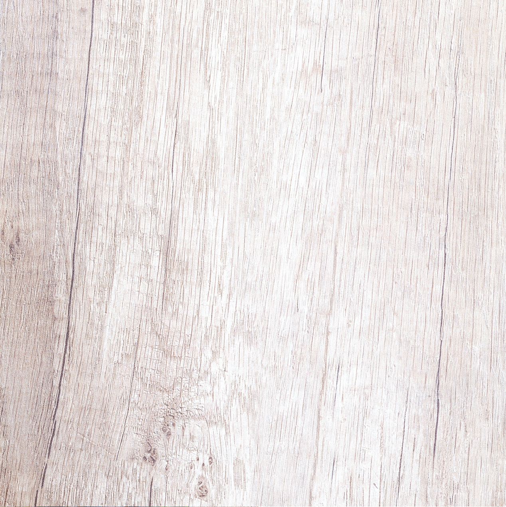

Pesto di Basilico

Ingredienti
Basilico, the beautiful herb that helps
40g
Pinoli
50g
Olio d'oliva
50mL
Parmigiano
50g
Sale, Pepe
100 grani
Procedimento
Fai questo e questo. Ricordati di fare anche questo
Fai questo e questo. Ricordati di fare anche questo
Fai questo e questo. Ricordati di fare anche questo
Fai questo e questo. Ricordati di fare anche questo